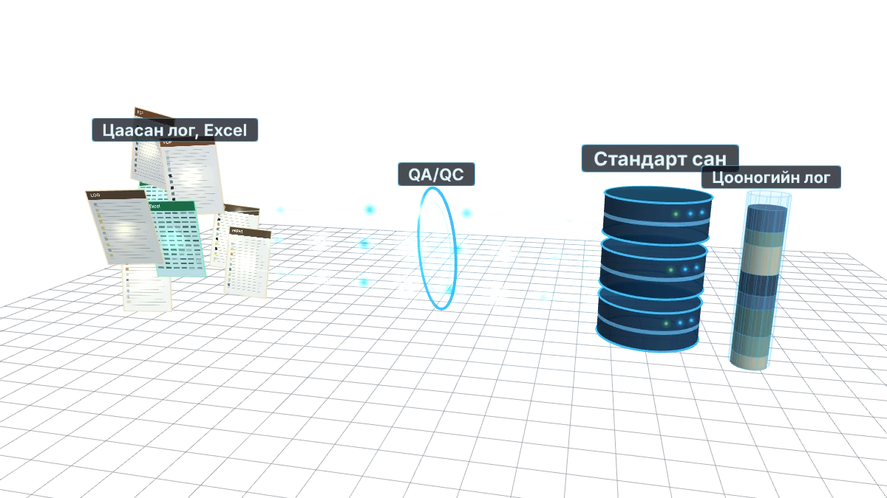

Цооногийн паспорт, хазайлт
HOLE_ID, координат, өндөр, гүн, эхлэх огноо, хазайлтын (dip, azimuth) хэмжилтийг нэг хүснэгтэд цэгцэлнэ.
Хуучин өгөгдөл цахимжуулах
Өмнөх жилүүдийн цооногийн паспорт, хазайлт, геологи, геотехникийн цаасан болон Excel лог, дээж, лабораторийн үр дүн, зураг, PDF архивыг цэгцэлж стандарт мэдээллийн санд оруулна. Шинэ стандартыг багтай хамт нэвтрүүлж, сургалт, дэмжлэг үзүүлнэ.

Боломжууд
HOLE_ID, координат, өндөр, гүн, эхлэх огноо, хазайлтын (dip, azimuth) хэмжилтийг нэг хүснэгтэд цэгцэлнэ.
Цаасан болон Excel логийг интервал бүрээр уншиж, литологи, RQD зэрэг талбарыг стандарт код руу хөрвүүлнэ.
Дээжийн интервал, төрөл, лабораторийн шинжилгээний үр дүнг цооногтой нь холбоно.
Хуучин скан, зураг, тайланг цооног, интервалтай нь холбож архивлана.
Давхардсан дугаар, гүний цоорхой, буруу координат зэргийг шалгаж, засварын жагсаалт гаргана.
Шинэ маягт, санг ашиглах сургалт хийж, эхний хугацаанд дэмжлэг үзүүлнэ.
Ажлын урсгал
Ямар өгөгдөл, ямар хэлбэрээр (цаас, Excel, PDF) байгааг тоолж, эрэмбэлнэ.
Сканер, гараар оруулах, хүснэгт нэгтгэх замаар цэвэр өгөгдөл болгоно.
Нэг кодын жагсаалт, нэрлэх дүрэм, шалгах нөхцөлөөр нийцлийг хангана.
Стандартад орсон өгөгдлийг мэдээллийн санд ачаалж, багийг сургаж нэвтрүүлнэ.
Жишээ
Өөр өөр форматтай хуучин файлыг нэг бүтэцтэй хүснэгт, нэг төлөвтэй ажлын жагсаалт болгоно. Доорх нь зохиомол жишээ.
| Төрөл | Эх үүсвэр | Төлөв |
|---|---|---|
| Цооногийн паспорт | Excel, цаасан бүртгэл | Системд орсон |
| Хазайлтын хэмжилт | PDF хүснэгт | Цэвэрлэсэн |
| Геологийн лог | Цаасан лог, хуучин Excel | Шалгаж байна |
| Геотехникийн лог | Цаасан лог | Цахимжуулж байна |
| Дээж, лаборатори | Лаб-ын Excel, PDF | Холбож байна |
| Зураг, тайлан | Скан, PDF архив | Ангилж байна |
| HOLE_ID | Зүүн | Хойд | RL | Гүн, м |
|---|---|---|---|---|
| DH-01 | 512345.2 | 5432109.8 | 1284.5 | 152.0 |
| DH-02 | 512410.6 | 5432188.1 | 1281.0 | 180.4 |
| DH-03 | 512488.0 | 5432264.5 | 1279.2 | 165.8 |
| DH-04 | 512552.4 | 5432339.0 | 1276.8 | 201.5 |
Жишээг зохиомол өгөгдлөөр харуулав.
Бидэнтэй холбогдоорой. Танай ажлын урсгалыг судалж, тохирох шийдлийг санал болгоно.